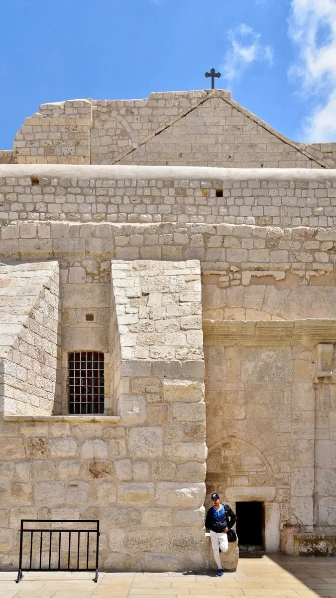
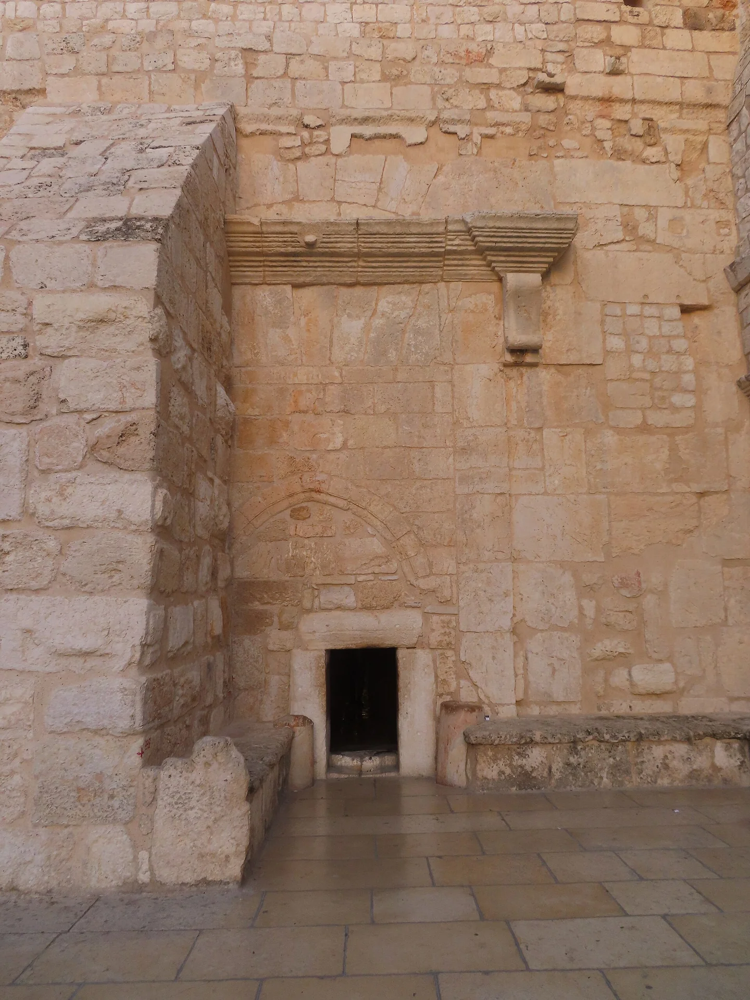

아직 펼치지 않은 카드베들레헴, 그 밤의 자리 · 1예수탄생교회 ‘겸손의 문’어른도 허리를 굽혀야 들어가는 문이 있어요. 왜 이렇게 작게 만들었을까요?문이 아주 작아! 어른은 어떻게 들어갈까?
339년 첫 교회 · 6세기 지금 성당팔레스타인 베들레헴 · 구유 광장
예수탄생교회 ‘겸손의 문’
베들레헴 구유 광장 쪽 높은 돌벽에 문은 하나뿐이에요. 높이가 1.2m쯤이라 어른도 허리를 굽혀야 들어가요. 이 성당 아래에는 예수가 태어난 곳으로 전해지는 동굴이 있어요. 그 문을 지나 동굴 계단까지 한 곳씩 따라 들어가 보세요.
아주 오래된 교회에 아주 작은 문이 있어. 어른도 허리를 숙여야 들어갈 수 있대. 우리도 같이 들어가 볼까?
검수 전 시안이에요(기준서 1판). 장면에는 기록에 있는 것만 옮겼고, 전해지는 이야기는 그렇다고 밝혔어요. 상상은 ‘눈 감고 상상해 보기’에만 썼어요. 길잡이 평면도는 이 안내서가 그렸어요.
시안 확인용카드 단계 미리 보기
1
언덕 위의 요새
1860~1880년 무렵에 찍은 베들레헴 사진이에요. 언덕 위에 높은 돌담을 두른 건물들이 요새처럼 서 있어요. 그 가운데에 예수탄생교회가 있어요.
이 자리의 첫 교회는 로마의 콘스탄티누스 황제 때 지어 339년 5월 31일에 봉헌했어요. 봉헌은 새 교회를 하나님께 바치는 예식이에요. 6세기 초에 불탄 뒤 비잔틴(동로마)의 유스티니아누스 황제 때 다시 지은 성당이 지금까지 서 있어요. 이 카드의 ‘교회’와 ‘성당’은 같은 건물을 가리켜요.
614년 페르시아 군대가 쳐들어와 이 땅의 교회를 많이 무너뜨렸을 때도 이 성당은 남았어요. 9세기 예루살렘 교회 회의가 쓴 편지는 그 까닭을 이렇게 전해요. 성당 앞면에 페르시아 옷을 입은 동방박사가 그려져 있어서, 군인들이 그림 속 자기네 조상의 옷차림을 알아보고 성당을 해치지 않았다고요.
옛날 사진이야. 언덕 위에 커다란 돌집들이 성처럼 서 있지? 그 가운데가 예수님이 태어난 곳에 세운 교회래.
물어보기이 교회는 왜 성처럼 높은 담을 둘렀을까?
2
세 시대의 문
오늘의 문이에요. 벽을 위에서부터 읽으면 세 시대가 보여요.
맨 위에 길게 튀어나온 돌은 6세기 큰 문의 윗부분이에요. 그 아래 뾰족한 아치 자국은 12세기 십자군 시대의 문이에요. 맨 아래 네모난 문이 1500년대, 이 땅을 다스리던 오스만 제국 때 다시 줄인 지금의 문이에요.

높이는 1.2m쯤이에요. 말이나 수레를 끌고 오는 약탈자가 그대로 들어오지 못하게 줄였다고 해요. 1590년대 이곳에 머문 수도자 베르나르디노 아미코도, 입구가 작아서 말을 탄 채로는 들어올 수 없다고 적었어요.
그리스도인들은 이 문을 ‘겸손의 문’이라고 불러요. 하나님이 사람이 되어 구유에 누운 아기로 오셨다고 믿는 자리에, 누구나 몸을 낮춰 들어가기 때문이에요.
문 위를 봐. 길쭉한 돌, 뾰족한 아치, 그리고 작은 문! 문이 두 번이나 작아졌대.
물어보기이 문을 지나려면 몸을 얼마나 숙여야 할까? 같이 해 볼까?
3
허리를 굽혀 들어가면
문을 지나면 먼저 앞마루(본당 앞의 좁은 방)가 나와요. 그다음 나무 문을 지나면 넓은 성당이 펼쳐져요.
순례자들이 걷는 길을 따라 동굴 계단까지 한 곳씩 들어가 보세요.
‘다음 곳으로’를 눌러 문에서 동굴 계단까지 따라가 보세요.
 겸손의 문앞마루와 나무 문기둥 숲바닥 아래 첫 교회벽 위의 천사들동굴로 내려가는 계단
겸손의 문앞마루와 나무 문기둥 숲바닥 아래 첫 교회벽 위의 천사들동굴로 내려가는 계단위쪽이 동쪽(제단)이에요. 실제 비율과 달라요 · 이 안내서가 그린 길잡이 평면도 · 베들레헴시·유네스코·Jewish Virtual Library의 배치 설명을 바탕으로
동굴 계단 앞에 왔어요. 이 아래가 다음 카드 ‘탄생 동굴의 은빛 별’이에요.
작은 문을 지나면 앞마루, 그다음 커다란 성당이야. 같이 한 곳씩 가 보자!
물어보기바닥 아래에는 무엇이 숨어 있을까?
4
발아래 4세기
1934년 사진이에요. 그때 이 땅을 맡아 다스리던 영국 정부가 1932~1934년에 성당 바닥을 파 보았어요. 지금 바닥보다 60cm쯤 아래에서 첫 교회의 모자이크가 나왔어요.
식물과 동물, 기하학 무늬가 이어져요. 글자는 그리스어 ‘ΙΧΘΥΣ(익투스)’ 하나뿐이에요. ‘물고기’라는 뜻인데, 그리스도인들은 예수를 가리키는 표시로 써 왔어요.

지금은 바닥의 나무 뚜껑을 열고 그 아래를 들여다봐요. 머리 위 높은 벽에는 1165~1169년에 만든 금빛 모자이크가 남아 있어요. 들어올 때 작은 문 앞에서 허리를 굽혔듯이, 첫 교회를 보려면 한 번 더 고개를 숙여요.
직접 가서 작은 문을 지나면, 맨 먼저 어디로 가 볼까요?
바닥 밑에 또 바닥이 있었어! 아주아주 오래전에 만든 모자이크야.
물어보기모자이크 속에서 어떤 무늬가 보여?
눈 감고 상상해 보기
한낮의 광장은 눈부셔요. 작은 문 앞에서 허리를 굽히자 등에 닿던 햇볕이 사라지고, 서늘한 돌 냄새가 나요. 어둑한 앞마루를 지나 나무 문을 밀면, 높은 창에서 내려온 빛줄기 사이로 붉은 기둥들이 줄지어 서 있어요. 발소리가 천천히 울려요.
눈을 감아 봐. 햇볕이 쨍쨍한 광장이야. 작은 문 앞에서 허리를 숙이면, 갑자기 서늘하고 조용해져. 고개를 들면 커다란 기둥들이 줄지어 서 있어.
나의 자리
내가 들어가려면 몸을 낮춰야 하는 문은 어디일까요? 나는 누구 앞에서 허리를 굽힐 수 있나요?
키를 낮춰서 동생이나 친구 눈높이로 이야기해 본 적 있어?
마음에 닿는 한 줄을 고르거나 직접 써 보세요. 한 줄을 남기면 이 자리의 도장이 찍혀요. 이 기기에만 저장돼요.
더 깊이
이야기를 보다 궁금해질 만한 것들이에요. 답을 읽거나 짧은 영화로 보세요.
높은 사람도 정말 허리를 굽혀요? 왜 ‘겸손의 문’이에요?
물고기가 왜 예수예요? 차 뒤에 붙은 물고기 스티커가 그거예요?
뒷이야기
아직 펼치지 않은 이야기예요. 누르면 이야기가 펼쳐지고 색이 돌아와요. 더 알고 싶으면 근거를 따라가 보세요.
다 펼치면, 다음에 오실 때 새 이야기가 찾아와요.
오늘의 뒷이야기는 여기까지예요. 다음에 오시면 새 이야기가 기다리고 있어요.
펼친 뒷이야기 · 누르면 다시 볼 수 있어요
더 찾아보기
기록마다 다른 점
문의 높이 1.2m(See the Holy Land), 4피트(약 1.2m, 가톨릭 월드 리포트)로 적은 곳이 많아요. 1.5m로 적은 글도 있어요.
문을 줄인 때 오스만 제국 때로 보는 글이 많고(가톨릭 월드 리포트), ‘1500년 무렵’으로 적은 안내서도 있어요(See the Holy Land). 1590년대의 아미코는 이미 작아진 입구를 보았어요.
페르시아 군대 이야기 9세기 예루살렘 교회 회의의 편지에 나오는, 전해지는 이야기예요. 가톨릭 월드 리포트는 편지를 838년의 것으로 소개하고 동방박사 그림이 성당 앞면에 있었다고 적었어요. See the Holy Land는 안쪽 벽의 모자이크였다고 적었어요.
다시 나온 천사 2016년, 벽의 회반죽 아래에서 천사 하나가 다시 나왔어요. 복원을 맡은 피아첸티는 ‘일곱째 천사’를 회반죽 뒤에서 찾았다고 했고, 베들레헴시는 ‘왼쪽 다섯째 천사’라고 소개해요. 미켈레 바치 교수는 이 천사가 1842년 수리 때 회반죽에 덮였다고 썼어요.
지붕을 고친 해 베네치아 목수들이 지붕을 다시 얹은 해를 1479년(워싱턴포스트)으로, 잉글랜드 왕이 납을 보낸 해를 1482년(See the Holy Land)으로 적어요. 그래서 뒷이야기에는 ‘1480년 무렵’으로 썼어요.
바닥 모자이크의 나이 베들레헴시와 유네스코는 4세기 첫 교회의 바닥으로 소개해요. 5세기 전반에 다시 깐 바닥으로 보는 학자들도 있어서, 아직 의견이 갈려요.
말씀과 함께 읽기
그리스도인들은 이 낮은 문을, 하나님이 낮아지셨다는 말씀과 함께 읽어 왔어요. 말씀은 뜻만 옮기고, 본문은 대한성서공회 개역개정으로 이어 드려요.
누가복음 2장 7절 마리아가 아기를 낳아 구유에 뉘었다는 말씀이에요. 머물 방이 없었기 때문이라고 적혀 있어요.
빌립보서 2장 6~8절 그리스도께서 자기를 낮추어 사람의 모습으로 오셨다는 말씀이에요.
직접 가 보기
확인한 날 · 2026년 11월 18일 · 바뀌기 쉬운 정보라 정기적으로 다시 확인해요
예수탄생교회는 베들레헴 구유 광장에 있어요. 2012년 ‘예수 탄생지: 예수탄생교회와 순례길’이라는 이름으로 세계유산이 되었어요.
요르단강 서안 지역이라 떠나기 전에 외교부 해외안전여행 누리집에서 여행경보를 꼭 확인해요. 여는 시간은 바뀌기 쉬워서, 가기 전에 현지에서 다시 확인해 주세요.
동굴 계단까지 금박
‘허리를 굽혀 들어가면’에서 문부터 동굴 계단까지 여섯 곳을 끝까지 따라가면 카드에 금박이 입혀져요.
문에서 동굴 계단까지 여섯 곳 따라가기
순례자처럼 먼저 갈 곳 고르기 채색
둘 가운데 하나만 해도 카드가 채색돼요.
문을 지나 맨 먼저 가 볼 곳 고르기
아이와 함께 ‘영화처럼 보기’를 끝까지 보기
근거 보기 (19)
- 유네스코 세계유산: Birthplace of Jesus — 339년 첫 교회, 6세기 유스티니아누스 때 다시 지은 성당, 4세기 바닥 모자이크, 12세기 기둥 그림, 세 교회
- 베들레헴시: The Church of the Nativity — 앞벽의 세 시대, 1227년 아르메니아 문, 기둥 50개와 그림 있는 기둥 33개, ‘ΙΧΘΥΣ’, 벽 모자이크 1165~1169년, 2016년 천사
- 성서고고학회(BAS) Bible History Daily: Church of the Nativity — 339년 5월 31일 봉헌, 6세기 초 화재, 기둥 50개, 오스만 시대의 문
- Catholic World Report(2019): The church that stands at the spot of Christ’s birth — 614년 페르시아 군대와 838년 편지, 4피트 문과 줄인 까닭, 바닥 모자이크 깊이
- Jewish Virtual Library: The Basilica of the Nativity — 막아 버린 옛 문 둘, 성가대석 양옆의 동굴 계단(평면도 바탕)
- See the Holy Land: Church of the Nativity — 문 높이 1.2m, 1500년 무렵, 붉은 석회암 기둥, 나무 뚜껑, 동굴 계단 자리
- 피아첸티 복원센터(라틴 총대주교청 기사, 2015·2016): 나무 문의 아르메니아 글과 아랍 글, 회반죽 뒤에서 찾은 천사
- Michele Bacci, “Old Restorations and New Discoveries in the Nativity Church, Bethlehem”, Convivium 2(2015) — 1842년 수리 때 덮인 천사
- Bibliotheca Terrae Sanctae: 아미코의 『성지 성당 평면도』와 베들레헴 성당 — 말을 타고 들어올 수 없는 작은 입구, 1590년대 성지에 온 아미코
- 서식스 대학교 Planet Bethlehem 자료실: 1934년 6월 바닥 모자이크 사진 — 1932~1934년 영국 정부의 발굴
- 미국 의회도서관: 페터 베르크하임 사진 [Church of Nativity, Bethlehem] — 1860~1880년 무렵
- Fodor’s: Church of the Nativity — 본당의 붉은 돌기둥 44개
- 마태복음 2장(대한성서공회 개역개정) — 별을 보고 동쪽에서 찾아온 박사들(열쇠 1)
- World History Encyclopedia(2022): Magi — ‘마고이’는 페르시아 종교(조로아스터교)의 제사장(열쇠 1)
- 예루살렘 라틴 총대주교청(2025): 성탄 전날 총대주교가 좁은 문으로 성당에 들어감(열쇠 2)
- 아우구스티누스, 『신국론』 18권 23장(New Advent 영어 번역) — ΙΧΘΥΣ 머리글자(열쇠 3)
- 성서고고학회 도서관: “Jesus Christ, God’s Son, Savior” — 십자가보다 먼저 쓴 물고기 표시, 오늘의 물고기 스티커(열쇠 3)
- 미국 연합감리교회: Fish — ‘예수 물고기’가 1970년대에 차에 널리 퍼짐(열쇠 3)
- “A Revised Date for the Mosaic Pavements of the Church of the Nativity, Bethlehem”, Ancient West and East 11(2012) — 바닥 모자이크를 5세기로 보는 의견과 4세기로 보는 의견
그림·사진·소리 출처
- 사진: 페터 베르크하임 · 퍼블릭 도메인 · 위키미디어 공용(미국 의회도서관)
- 사진: Fallaner · CC BY-SA 4.0 · 위키미디어 공용
- 사진: 맷슨 컬렉션(미국 의회도서관) · 퍼블릭 도메인 · 위키미디어 공용
- 이 안내서가 그린 길잡이 평면도 · 베들레헴시·유네스코·Jewish Virtual Library의 배치 설명을 바탕으로
- 사진: Bahnfrend · CC BY-SA 4.0 · 위키미디어 공용
- 사진: Bahnfrend · CC BY-SA 4.0 · 위키미디어 공용
- 사진: Bahnfrend · CC BY-SA 4.0 · 위키미디어 공용
‘처음 만나는 기독교 문화’의 깊은 카드예요. 카드 단계와 남긴 글은 이 기기에만 저장돼요.